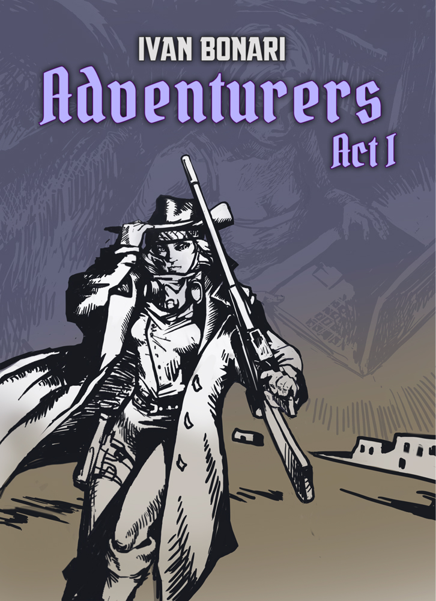

Ivan Bonari
Professional Pathological Dreamer
Perseverance is my superpower. No matter how long it takes, the stories will be told — and the right readers will find them… probably. :)
I started writing as a teenager, and since then, it has been my way of exploring worlds that don't exist—but maybe should. With a background in philology, I've read countless works of classic literature from around the world, and I strive to blend that timeless style with adventure and humor in my writing. That's exactly what I put into my books.
I grew up on video games, movies, and literature that shaped my imagination—from Fallout and other RPGs to Star Wars, The Dark Tower, and The Witcher. Music is also a big part of my storytelling, so maybe you'll hear its rhythm between the lines.
Right now, I'm working on Adventurers, a series where the real world collides with game worlds, and the characters must figure out who's really in control of the story. But that's not the only thing I explore—I also write dark fantasy and noir thrillers in my native language, which I plan to bring to English readers. I hope my books give you as much joy as I get from creating them.
Currently in Progress
Latest Release

Adventurers: Act I
Arthur and Vince thought they finally made it home. You know, back to the real world, with Wi-Fi, boring work, and no risk of being eaten by a dragon. But somehow, their adventure buddies from the last game tagged along. Oops.
To make things even better (or worse?), Arthur—our resident warrior with far too little patience—convinced the crew to try a new game. Because what could possibly go wrong? Well… everything. Now they're knee-deep in the Wastelands—a post-apocalyptic desert filled with raiders, strange towns, and a suspiciously high number of things that shoot.
Their mission? Find their missing friend Max, who got here first and somehow became a legend. Also, figure out if the fabled Center of the Wastelands—a mystical green oasis in the desert—is real. No pressure.
A fast-paced, sarcastic, and explosively fun adventure packed with pop culture references, chaotic battles, and a mystery that's definitely not as grand as everyone thinks.
Get Exclusive Stories & Updates
Join my mailing list for free chapters, behind-the-scenes insights, and early book announcements. No spam, just great stories!
Subscribe on SubstackReal Stories, Real Impressions
See what fellow readers loved about my books. Here are some of their thoughts and experiences.
Adventurers: Act I captivates readers from the very first lines, immersing them in a remarkable world filled with danger and a sense of daring. The dynamic narrative creates a vivid sense of presence, reminiscent of cinematic action. The journey of the main characters is so gripping that readers will find themselves eagerly turning pages to uncover what lies just beyond the next plot twist.
Adventurers: Act I — the book is exciting from the first pages. The atmosphere of dusty towns, chases and shootings are perfectly conveyed, as if you become a participant in the adventure. Heroes develop, facing difficult challenges, and the plot keeps you in suspense until the very end. Excellent for fans of adventure and gamer stories.